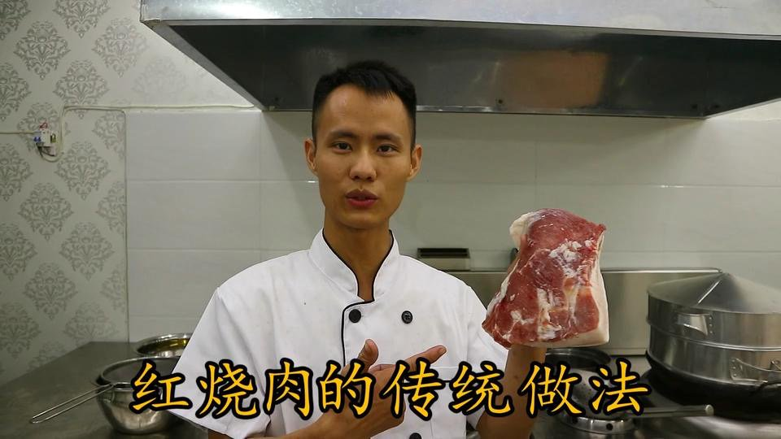
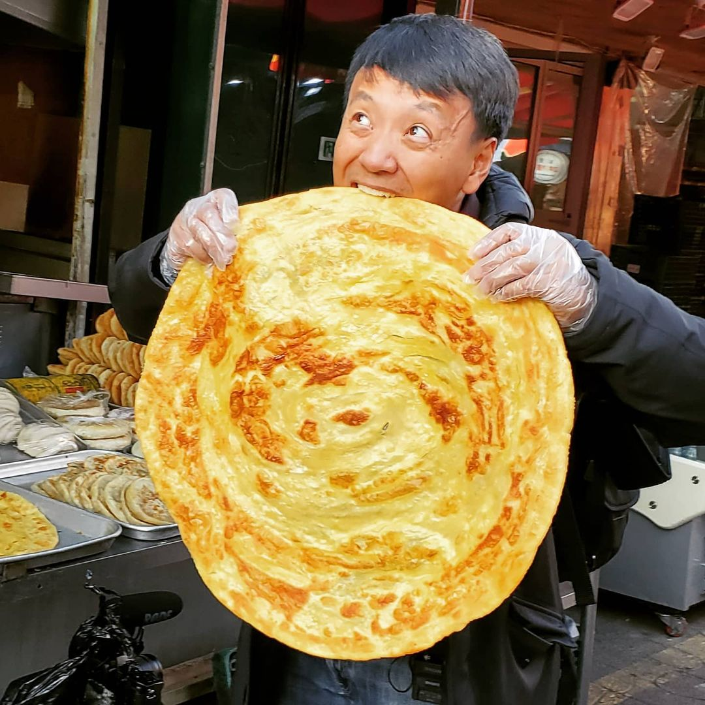

The universal language that brings us together.
People
My favorite chefs, home-cooks, and full-time eaters.

J. Kenji Lopez-Alt
A professional, unpretencious chef with a scientific
approach to cooking. Learn how to refine your home cooking skills and
explore dishes from all over the world with his series, "Kenji's Cooking Show".

Adam Ragusea
A practical home-cook who teaches you how to make delicious food without
being fussy or fancy. Learn how to revitalize your weeknight dinners with simple but effective
cooking techniques.

Alex
A French home-cook who takes food science to another level. From hacking kitchen tools
to maximize efficiency, to making a perfectly round, juicy meatball, to making homemade
beer, Alex's video series documents his trials and tribulations for your entertainment.

Not Another Cooking Show
A home-cook who teaches you WHAT to do and WHY you do it. Learn the essentials of Western
culinary technique and a sprinkle more in his video series.

Chinese Cooking Demystified
Accessible to the Western audience, insformative, and authentic. My go-to resource for learning
classic Chinese home-style and restaurant dishes. Based in Shenzhen, China.

The Way of Ramen
A "normal guy trying to get better at making ramen." Learn how to make ramen and appreciate
the craft of ramen-making in his video series.

Chef Wang Gang
A professional Chinese chef sharing his secrets to making restaurant-style Chinese dishes.

Strictly Dumpling
My favorite food content creator, Mike Chen. Travel with him around the world as
he shares the most mouthwatering dishes that you must try when you visit.
Warning: Do not watch on an empty stomach!

Mark Weins
Follow him and his family as they travel around the world in search of delicious eats and fellow
food-lovers. His video series truely demonstrates the power of food as a great unifier. Despite
differences in religion, ethnicity, or culture, anyone can appreciate a satisfying meal.
Dishes
A few of my favorite dishes from around the world.
Pho
Vietnam
Southeast Asian cuisine is remarkable to me in the way that it balances contrasting flavors and textures to create an extremely comforting and fun experience. One often hears of a balance of sweet, salty, sour, spicy, herbacious, meaty, soft, crunchy.
Pad Kra Pao Moo
Thailand
An aromatic stir fry masterpiece that relies heavily on the peppery, aromatic qualities of holy basil to create an dish that almost dances on the tongue.
Thai Green Curry
Thailand
A creamy coconut-based curry accented by bright citrus notes and firey green chili's. Perfectly paired with fluffy rice.
Japchae
South Korea
A satisfying glass noodle dish full of vegetables seasoned with soy sauce and seasame oil, characteristic of South Korean flavors.
In N Out Burger
USA
A classic So-Cal institution that serves an unbeatable dollar-to-flavor ratio burger, topped with crunchy lettuce, tomatoes, and a grilled bun.